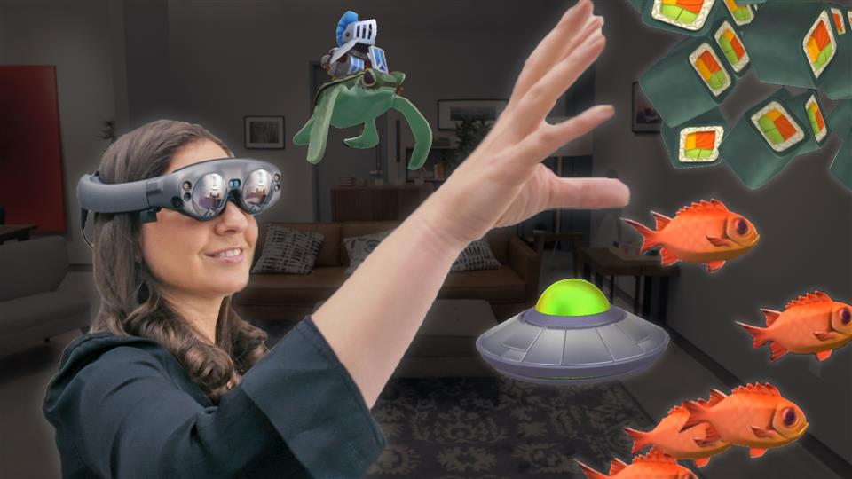
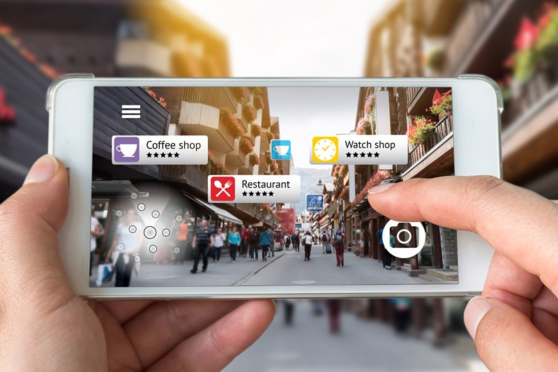
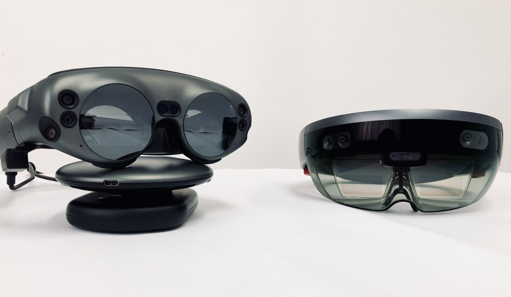

AR is an interactive experience of a real world environment where the objects that reside in the real world in our hands by computer generated perceptual information. It enhances and provides a visual environment that interacts directly with the real world with images, animation, graphics, texts and virtual information by using devices such as smartphones, tablets, smart lenses and AR glasses.
Augmented Reality
Specification Augmented Reality
- Augmented Reality is:
- 25% virtual + 75% real
- Optical Head-Mounted Display 
- A Optical Head-Mounted Displays(OHMD) makes the displays of these devices transparent. They allow users to see through them while projecting images and information in front of the users' eyes.
What AR does?
AR works by user's physical environment is enhanced with contextually relevant digital content in real-time to the user.
How is AR doing in terms of the future
AR appears to be making more headway into the mainstream due to the lower costs of creating the apps.
Applications / Headset used for Augmented Reality
What Industries are Using AR?
Augmented reality can be used for gaming, social interactions and business.
- Real-World Applications:
- Education and Learning
- Navigation
- Beauty and Fashion
- Gaming
- Medicine
- Military and Government
- Retail and Commerce
- Urban and Architecture
- Sports
- Training and Maintenance
- Branding and Marketing
- Automotive and Tourism
Augmented Reality Game Applications
The Pokémon Go application game was made available by Nintendo in 2016.
Letting you virtually place floating up windows and 3-D decorations around you. Recognizing surroundings and providing additional information about when it sees, offering live translation of text or pop-up reviews of restaurants as you look at them. Also insanely modular multi monitor computering setup.
2 Main Types of Augumented Reality
Devices and Headsets
- Portable devices
- Smartphones
- Tablets
Augmented reality is the most accessible reality technology as people can use their smart phones/ tablets to run AR applications. The applications require the use of a smartphone camera to capture the real world. Ritual objects are then overlaid and the users can see them on their smart phone screen.

- Smart Glasses and AR headsets
- Microsoft HoloLens
- Magic Leap One
- Google Glasses
- Meta 2
They are glasses to immerse users into a fully virtual environment by adding digital objects to the real world.